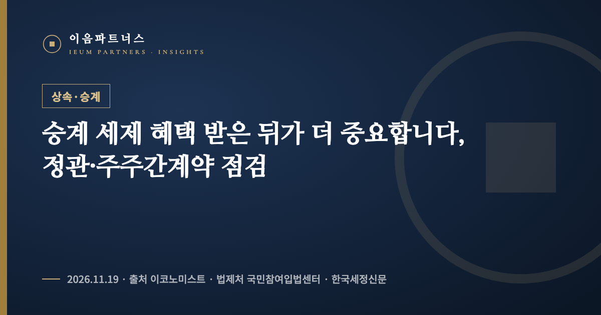

승계 세제 혜택 받은 뒤가 더 중요합니다, 정관·주주간계약 점검

가업상속공제나 가업승계 증여세 과세특례를 받았다고 해서 승계가 끝난 것은 아닙니다. 혜택을 받은 뒤에도 일정 기간 지분과 대표이사 자리, 업종 등을 유지해야 하고, 이를 지키지 못하면 줄어든 세금을 다시 낼 수 있습니다. 이 글에서는 승계 뒤 사후관리(혜택을 받은 뒤 일정 기간 요건을 지키는지 확인하는 절차)를 위해 정관과 주주간계약을 어떻게 함께 점검해야 하는지 정리합니다.
정부가 국회에 낸 2026년 세법개정안에는 가업상속공제의 사후관리 기간을 5년에서 10년으로 늘리는 내용이 담겨 있고, 2026년 11월 현재 국회에서 심사 중입니다(법제처 국민참여입법센터). 관리해야 할 기간이 길어질수록 지분 구조와 의사결정 구조를 미리 맞춰 두는 일이 중요해집니다. 우리 회사 승계 구조가 궁금하시다면 카카오톡 채널 이음파트너스에서 편하게 물어보셔도 됩니다.
승계 뒤에 무엇을 지켜야 하나
가업승계 세제 혜택은 일정 지분 보유 요건과 최대주주 요건을 갖춰야 받을 수 있습니다. 현행 가업상속공제는 돌아가신 분이 최대주주로서 지분 40%(상장법인은 20%) 이상을 10년 이상 계속 보유했어야 합니다(한국세정신문, 2026년 세제개편안). 이런 기간 요건은 승계 직전에 급하게 채우기 어려우므로 특수관계인(가족 등 세법상 가까운 사람) 보유 지분과 대표이사 등기 상태까지 미리 살펴야 합니다.
혜택을 받은 뒤에는 가업용 자산과 업종, 승계받은 지분을 일정 기간 유지해야 합니다. 증여세 과세특례(부모가 생전에 회사 주식을 넘길 때 낮은 세율을 적용하는 제도) 역시 주식을 받은 자녀의 대표이사 취임과 재직, 받은 주식의 유지가 핵심 관리 사항입니다.
| 구분 | 내용 |
|---|---|
| 가업상속공제 사후관리 | 현행 5년 → 정부안 10년 |
| 증여세 과세특례 사후관리 | 현행 5년 → 정부안 10년 |
| 주요 관리 사항 | 지분 유지, 대표이사 재직, 가업용 자산·업종 유지 |
| 정부안 적용 시기 | 2027년 7월 1일 이후 상속·증여분부터(국회 심사 중) |
지분은 팔지 않아도 줄어들 수 있습니다
지분 감소는 주식을 파는 경우에만 생기는 것이 아닙니다. 회사가 유상증자(새 주식을 발행해 자금을 받는 것)를 할 때 승계자가 새 주식을 인수하지 못하면 지분율이 낮아지고, 이 때문에 세무상 문제가 생길 수 있습니다. 투자 유치나 증자 계획이 있다면 계획 단계부터 사후관리 요건을 함께 검토해야 합니다.
정관으로 할 수 있는 것과 없는 것
정관은 이런 요건을 회사의 의사결정 구조에 반영하는 수단이 됩니다. 신주 발행과 배정, 신주인수권(새 주식을 먼저 받을 권리) 조항, 대표이사 선임·해임 구조를 승계 계획에 맞춰 점검하는 방식입니다. 다만 주식 양도를 일정 기간 전면 금지하는 조항은 법률상 허용되기 어려워, 정관만으로 주식 처분을 완전히 막기는 어렵습니다(이코노미스트).
주주간계약으로 빈틈을 메우려면
이 빈틈을 보완하는 수단이 주주간계약(주주들끼리 지분 처분과 의사결정 방법을 약속하는 계약)입니다. 다만 주주 사이의 양도 제한 약정은 원칙적으로 계약 당사자끼리만 효력이 있고 회사에 당연히 미치지는 않으므로, 정관과 연결해 설계해야 합니다.
- 승계자의 주식 처분 제한
- 증자 때 참여 의무와 지분 희석 방지 협의
- 대표이사 선임·해임 협력, 우선매수권(다른 주주가 팔 때 먼저 살 권리)
- 약정 위반 시 손해배상과 추징 세액 보전
주의할 점도 있습니다. 양도를 지나치게 묶는 약정은 효력이 부정될 수 있고, 추징 세액 보전 조항은 당사자끼리 책임을 나누는 장치일 뿐 세무서의 추징 자체를 막지는 못합니다. 기사에 소개된 변호사는 “가업승계는 세금을 줄이는 일이기 전에 회사의 의사결정 구조를 다음 세대에 넘기는 일”이라고 강조했습니다(이코노미스트).
대표님이 지금 확인할 것
- 주주명부상 지분과 실제 지분, 가족 보유 지분, 대표이사 등기 상태가 서로 맞는지
- 앞으로 투자 유치나 유상증자 계획이 있는지, 그때 승계자 지분율은 어떻게 되는지
- 정관의 신주 배정·대표이사 선임 조항이 승계 계획과 맞는지
- 주주간계약이 있다면 그 효력 기간이 사후관리 기간과 어긋나지 않는지
참고한 자료
- 법무법인 로앤에이 “가업승계, 세무 검토 넘어 정관·주주간계약 함께 점검해야” — 이코노미스트 (2026.11.19)
- 상속세 및 증여세법 일부개정법률안(정부, 제2221045호) — 법제처 국민참여입법센터 (2026.09.03)
- Ⅲ. 공정과세를 위한 조세개혁 추진-가업상속공제 개편(2026년 세제개편안) — 한국세정신문 (2026.08.05)
지금의 정관과 주주 구성이 사후관리 기간을 버틸 수 있는지 한 번 점검해 보시길 권합니다. 궁금한 점은 카카오톡 채널 이음파트너스로 문의해 주세요.
※ 이 글은 일반적인 정보 제공을 위한 것으로, 개별 사안은 세무사·노무사 등 전문가와 함께 확인하시기 바랍니다.